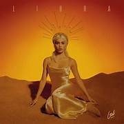

Mas sobre Lali
Albunes
“A Bailar”(2013)
- Asesina
- Isteria
- Del Otro Lado
- A Bailar
- No Estoy Sola
“Soy” (2016)
- Soy
- Unico
- Mi Religion
- Tu Revolucion
- Ego
“Brava” (2018)
- OMG!
- Tu Novia
- Besarte Mucho
- Somos Amante
- 100 Grado
"Libra" (2020)
- Eclipce
- Ladron
- Fasinada
- Bailo Pa Mi
- Laligera
“Disciplina” (2022)
- Disciplina
- Diva
- N5
- 2 Son 3
- Como Tu
“Lali” (2023)
- Obsesion
- Yegua
- Incondicional
- Qienes Son?
- 1 Amor
Premios
BreakTudo Awards
- Artista latina 2022
- Video favorito 2023
- Coreografia (Disciplina) 2023
- Sci Fi (2 son 3) 2022
Fans Choice Awards
- Artista femenino urbano (2021)
- Artista más popular(2017)
- Gaviota de Plata(2017)
- Gaviota de Oro(2017)
Premio Gardel
- Mejor artista pop (2019)
- Mejor de diseño portada(2019)
- Canciòn del año(2021)
- Mejor video clip corto(2023)
Sobre su Genero musical
El pop es un género de música popular que se originó en su forma moderna a mediados del decenio de 1950 en los Estados Unidos y el Reino Unido. Aunque, en la práctica, los términos música popular y música pop se aplican a veces a distintos estilos, sobre todo en español, Puesto que la música pop define a grupos con un estilo bien definido, mientras que la música popular se refiere a lo que escucha la mayoría de la gente en algún momento en particular. Siguiendo esta última línea, durante las décadas de 1950 y 1960, la música pop abarcaba el rock and roll y los estilos orientados a la juventud. Los términos siguieron siendo aproximadamente sinónimos hasta finales del decenio de 1960, después de lo cual el pop se asoció con la música más comercial, efímera y accesible, cuya definición es la aceptada actualmente para el género.